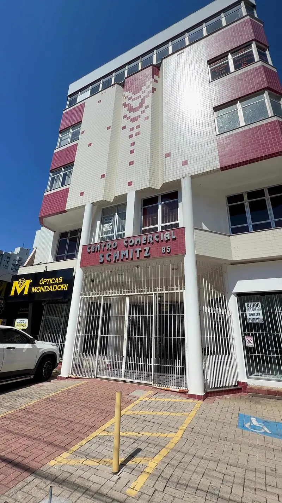

O Kobrasol é um bairro de São José, na Grande Florianópolis, conhecido como centro de comércio e serviços. Quem procura sala comercial na região quase sempre pesa a mesma pergunta: o ponto ajuda o negócio ou só o endereço? Este texto reúne o que ajuda, e também o que merece atenção antes de decidir.
Um bairro de comércio e serviço no dia a dia
No Kobrasol, o cliente resolve várias coisas na mesma ida: banco, farmácia, lanche, serviço de saúde, loja. Isso cria um hábito de circulação a pé e de ônibus que favorece negócios de atendimento ao público, como consultórios, salões, estética, ótica e escritórios. Para quem presta serviço, estar onde o cliente já circula costuma pesar mais do que ter a sala maior.
Um prédio com mistura de usos
O Centro Comercial Schmitz fica na Av. Delamar José da Silva, 85. No mesmo endereço já funcionam uma ótica, um salão de beleza, um estúdio de fotografia, um brechó, manicure e um escritório de advocacia. A mistura ajuda, porque quem vem a um negócio vê os outros. Negócios vizinhos que atendem públicos diferentes trazem movimento uns aos outros, sem concorrer.
Acesso por ônibus
Há ponto de ônibus na porta do prédio. Para clientes e para quem trabalha na sala e não vai de carro, isso conta. Em negócios de serviço com agenda, o transporte público pesa na decisão do cliente de marcar ou não a consulta.
O que avaliar com honestidade
Nenhum ponto é perfeito, e dizer isso evita decepção:
- Estacionamento. O prédio não tem estacionamento próprio. Há estacionamentos rotativos na região, mas se a maioria dos seus clientes vem de carro e fica muito tempo, pense nisso.
- Escada. Não há elevador. Para público com mobilidade reduzida, a opção é o térreo. Veja sala no térreo ou nos andares.
- Movimento da avenida. É bom para visibilidade e pede atenção ao ruído em salas voltadas para a rua.
Quem costuma se encaixar
- Profissionais de saúde que querem atender perto de onde o paciente já circula, como em consultório no Kobrasol.
- Escritórios de advocacia, contabilidade e consultoria, que dependem de acesso fácil para o cliente. Veja sala para escritório em São José.
- Lojas e serviços de balcão, que ganham com a visibilidade do térreo. Veja loja no térreo.
Como medir se o ponto serve ao seu negócio
Mais útil do que ouvir que um bairro é bom é testar o ponto com critérios seus. Tente este roteiro simples:
- Conte o movimento. Fique 30 minutos em frente ao prédio em dois horários, um de manhã e um à tarde, e observe quantas pessoas passam e quantas entram em negócios parecidos com o seu.
- Converse com vizinhos. Pergunte a quem já trabalha no prédio ou na quadra como é o fluxo de clientes ao longo da semana e em quais dias ele cai.
- Teste o acesso. Faça o trajeto como um cliente faria, de ônibus, a pé e de carro, e anote o tempo e os pontos de dificuldade.
- Calcule o alcance. Pense nos bairros de onde vêm os seus clientes e veja se o Kobrasol está no caminho deles.
- Compare com a sua agenda. Veja se o horário de maior movimento da região coincide com o horário em que você atende.
Pergunte aos negócios vizinhos
Quem já está instalado conhece o ponto melhor do que qualquer texto. Ao visitar o Centro Comercial Schmitz, aproveite para conversar com quem trabalha no prédio. Pergunte o que mudaria, o que funciona bem e se o movimento atende às expectativas. Uma conversa de dez minutos costuma revelar mais do que várias fotos.
Pergunte também o que quiser sobre as salas, o que está incluso e as condições do contrato. O atendimento é direto, pelo WhatsApp.
Como decidir
Visite o prédio em dois horários, um de manhã e um à tarde, e observe o movimento, o barulho e quem circula. Pergunte quais salas estão livres e o que está incluso no valor, que no Centro Comercial Schmitz inclui condomínio, IPTU e água. Se a visita confirmar a impressão, o contrato é feito direto com o proprietário. Leia também como alugar sua primeira sala comercial.
Para agendar uma visita, fale pelo WhatsApp (48) 98468-0088, de segunda a sexta, das 8h às 18h, e aos sábados, das 8h às 12h.
Texto informativo, que não substitui a orientação de um advogado.